6. Travel through the Southwest of Spain
6. Travel through the Southwest of Spain
October 15 to 18, 2021
Day 1, from Toledo to Zafra
October 15, 2021


92. Bohonal de Ibor
92. Bohonal de Ibor
The first day's departure was from Toledo to Zafra. The first stop would be after crossing the province of Cáceres pulling towards the road that leads to Guadalupe. It is in a place called Los Marmoles, where one day one of the most important cities of Roman Hispania was erected, Augustobriga. There, between the road and the Valdecañas reservoir, are the remains of a Roman temple from that city. It was the Roman city that was between Mérida Augusta and Toletum. Later it would become Talavera la Vieja and in the middle of the 20th century it would be submerged by the waters of the swamp. It has indicators of how the temple was and that it was from that city. Starting from the Roman temple, the Roman temple of Diana in Mérida would be arranged.
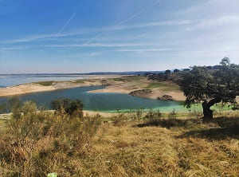
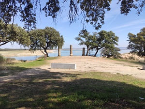
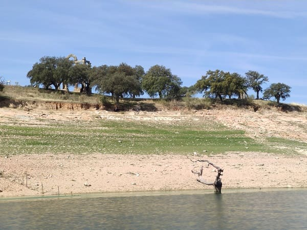
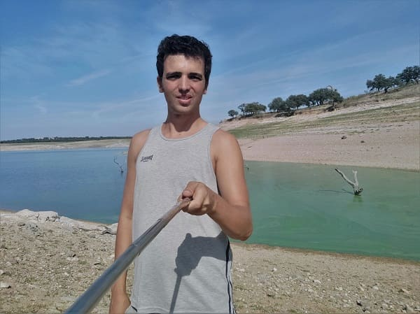
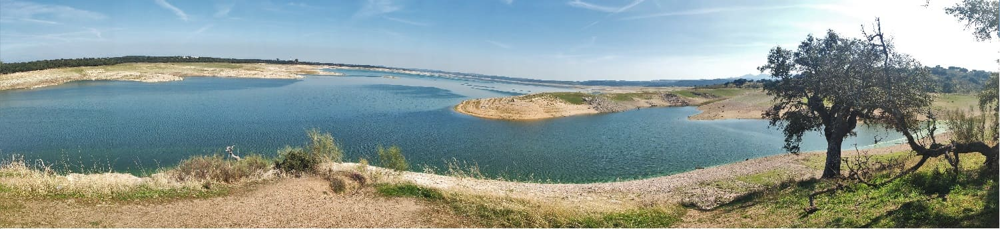

93. Quintana de la Serena
93. Quintana de la Serena
After eating, I head to the A5 motorway in Mérida, bound for
Quintana de la Serena. This municipality was a village in Islamic times and would not have anything of importance until the 15th century when it was part of the Alcantara order. Of the heritage, the Plaza Mayor stands out with
the church of Nuestra Señora de los Milagros, from the 15th century.
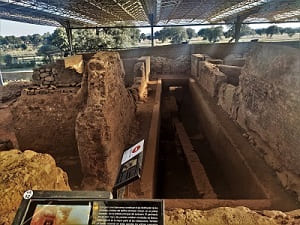
From there I will go to
Cancho Roano, an excavation area of a temple long before the Romans, with origins from the Tartessian period, the remains found at the bottom of the 7th century BC. This civilization was the ancient inhabitants of the peninsula, which has an interpretation center. This temple is very important because it is one of the oldest well-preserved buildings on the peninsula. Currently, most of the excavations from this period are in the province of Badajoz, and in that of Huelva, since this people and culture originated in the city of Cádiz and extended to the north, including the south of Portugal, Badajoz, Huelva and some areas of Seville.
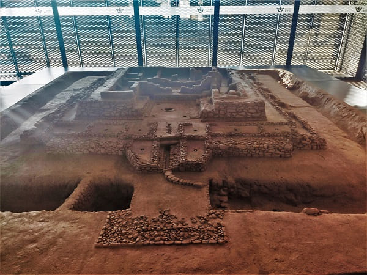
It is the best preserved Tartessian-Turdetan complex on the Iberian Peninsula, dating the original construction from at least the 6th century BC. C., although the building was enlarged and modified in later centuries. It is undoubtedly an exceptional and unique site, both for its shape, its size and its state of conservation, as well as for the objects found, which allow us to date its creation around 550 BC. C., while its destruction would not be after 370 a. C., caused by a fire, either accidental or intentional, within some type of religious rite.
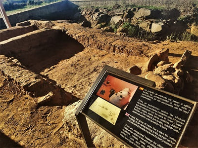
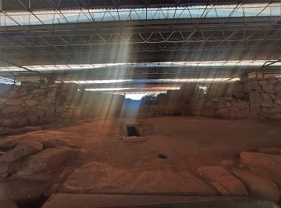
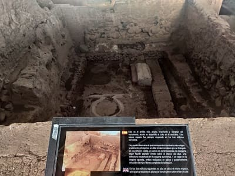
This area east of Badajoz, is ordered in a region called
La Serena, which was created by the order of Alcántara after the conquest from the Muslims in the 13th century. All this territory would be controlled by the Royal House from the reign of Felipe V.

94. Zalamea de la Serena
94. Zalamea de la Serena
Another of the "de la Serena" towns
Zalamea de la Serena. This town was founded in the year 300 BC. Many Roman remains have been found in it and in the square next to the church there remains one of the columns of a Roman building called Distylo. This type of building was of the funerary type and normally had a frieze at the top with an inscription. It is very well preserved because in medieval times it would be used to support the church tower.
This
church is that of Nuestra Señora de los Milagros, patron saint of most of the towns in the region of La Serena. It is from the 13th century, one of the oldest buildings after the reconquest but it has been remodeled several times, in the 15th and 17th centuries.
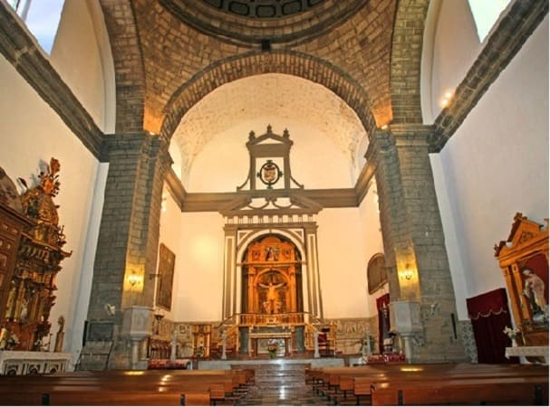
Another important religious building in the town is
the Real Capilla del Santísimo Cristo de la Quinta Angustia, a 17th-century building that stands out for its interior tiles with many scenes from the New and Old Testaments, Scenes from Genesis and Noah's Ark. It also stands out
the castle which is from the Muslim era of which four of the towers are preserved. It is among a series of houses since its wall would be used for its construction. The streets of Zalemea are homogeneous and have the DNA of these towns in La Serena.
The town is remembered for one of the most popular novels of the Spanish Golden Age, the 17th century. This novel is "The Mayor of Zalamea" based on real events in the town itself, in which a captain who returned to his city stays in Zalamea at the house of a landowner. This rapes his daughter and will be ordered to be executed by the landowner who was the mayor of the town.
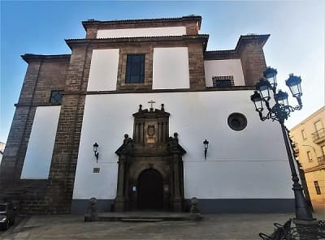
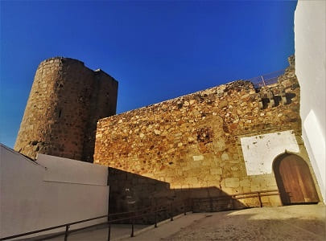


95. Azuaga
95. Azuaga
Lastly, I would visit
Azuaga. A town founded in Arab times, whose name recalls the origin of the Muslims who settled in these lands. From that time what remains is the fortress. After the reconquest, the population would grow, making it one of the largest in Extremadura. At the beginning of the 20th century, its artisanal and textile industrial activity would be such that it would reach almost 20,000 inhabitants.
The main street is Calle Llana followed by Calle Estalajes, where all the main buildings of the city are located. Palaces, period houses, churches and service buildings. This street crosses the entire municipality from one end to the other.
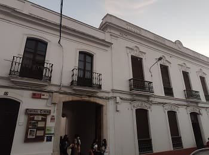
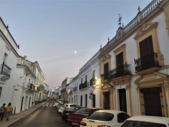
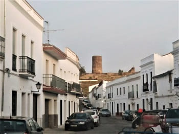
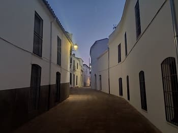
The most important building is
the church of Nuestra Señora de la Consolación, from the 16th century. The church stands out for its dimensions, more like a cathedral than a church, which is why it is sometimes known as "the cathedral of the south". Particularly noteworthy is the façade of the church in the Elizabethan Gothic style with a multitude of sculpted details. It also has a very beautiful Renaissance-style altarpiece.
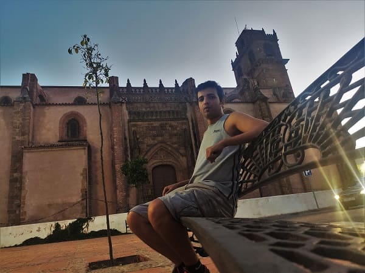
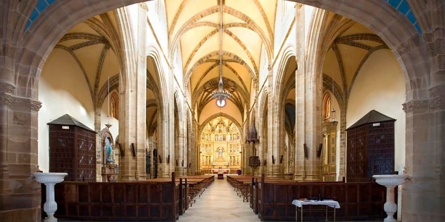
The other church is that of Cristo del Humilladero, large and more modern than the previous one, from the 18th century. It is mainly in the Baroque style and is more reminiscent of the churches of Huelva than of Extremadura.
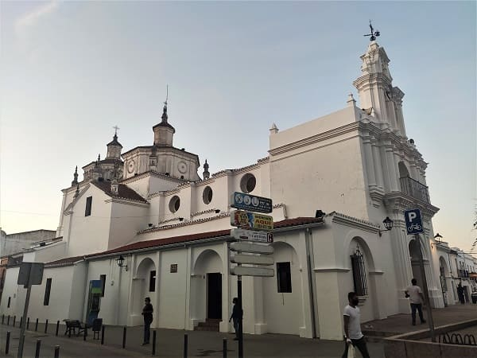
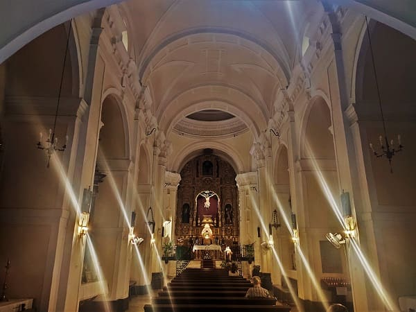
Already quite late I would arrive at Zafra where I would spend the night.
Plaza Mayor and Cancho Roano, s.VIac.
2
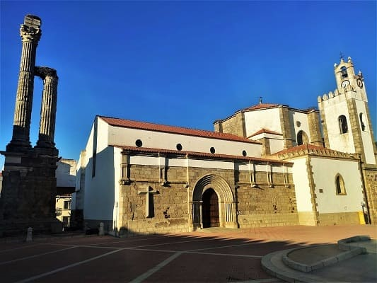
Our Lady of Miracles Church, 16th century and main square.
4
Our Lady Consolation Church, s.XVI.
5
Day 2, from Zafra to Palos de la Frontera (CLICK to continue)
October 16, 2021

![[Valid RSS]](https://www.onepointsync.com/wp-content/uploads/2016/08/valid-rss-rogers.png "Validate my RSS feed")